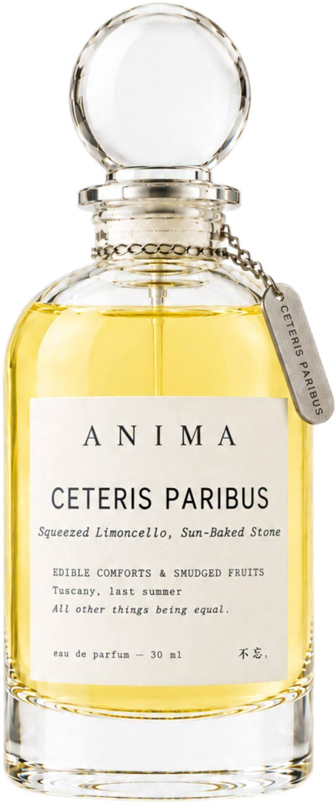

Squeezed Limoncello, Sun-Baked Stone
Narrative Story
Some summers you don't remember as a season at all, you remember as a single afternoon that never quite ended. Tuscany in July: the lemon garden was a green cathedral, the air so thick with citrus it felt like you could drink it, and someone handed me the best lemon sorbet I have ever tasted, so cold and tart it made my eyes close on its own. It melted faster than I could eat it and spilled down the front of my white sundress in a sticky yellow streak, and I didn't even mind, because the stones under my feet were baking hot from the morning and the heat of the stone wall against my back was dry and mineral and warm. The whole afternoon felt like a secret I was keeping from the rest of the world. Now, when I wear that dress, I don't just remember the trip. I feel the sun on my shoulders and taste the lemon, and for a second I am there again: barefoot on warm stone, the scent of squeezed limoncello hanging in the air, the ghost of a summer that still lives in the fabric. All other things being equal, that one clean taste tells the whole truth.
五、挤出的柠檬酒，晒透的石头
托斯卡纳的那个柠檬园，我到现在还记得脚底下的感觉。石头被太阳晒了一整天，踩上去是温的，不烫，像一块还没凉透的面包。我穿一条白棉布裙子，裙摆蹭在小腿肚上，风一吹就鼓起来。
柠檬挂在树上，有些熟透了，黄得很凶，凑近闻，酸味冲鼻子，冲得人想打喷嚏。我在园子边上的小铺买了一小杯柠檬冰糕，木勺子挖下去，冰碴子沙沙响。第一口酸得眯眼，第二口才开始甜。
后来我每次穿那条裙子，低头闻到布料上残留的洗衣液味道，都会有一瞬间以为自己在那个园子里。不是记得，是身体先想起来了：脚底是温的，风是干的，嘴里还有一点没化完的酸。
---
## COLLECTION 02 // CLEAN LINENS & SKIN SCENTS
Notes
Profile: Crisp Citrus, Dry Woody
Top: Lemon, Bergamot, Pink pepper | Middle: Cedarwood, Orange blossom | Base: Sandalwood, Vetiver, Amber
Occasion
Tuscany, last summer.
Ingredients
ALCOHOL ● PARFUM / FRAGRANCE ● AQUA / WATER / EAU ● BUTYL METHOXYDIBENZOYLMETHANE ● LIMONENE ● LINALOOL ● CITRAL ● GERANIOL ● FARNESOL ● BENZYL BENZOATE ● COUMARIN
Please be aware that ingredient lists may change or vary from time to time. Please refer to the ingredient list on the product package you receive for the most up to date list of ingredients.